Private-label double-wall cups, dry-flower glass, glass teapots and drinkware.
MOQ 500pcs | 30-45 day production | FOB/CIF/DDP shipping
Insulated double-wall cups and bowls — the best-seller for modern home and gift retail.
Real dried flowers or coloured particles sealed between the glass walls. Strong visual hook online.
Borosilicate teapots with wooden handles and trivet, plus reusable straw cups and tumblers.
56 models in this range — click any photo to enlarge. Full catalogue with model numbers available on request.
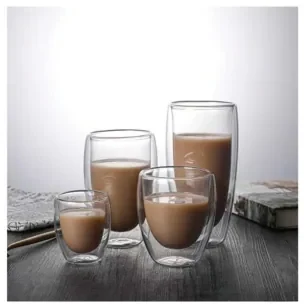
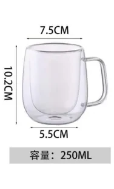
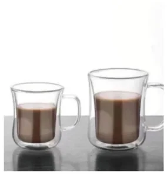
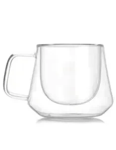
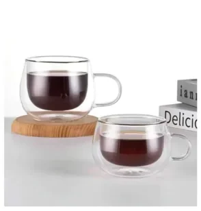
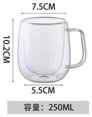
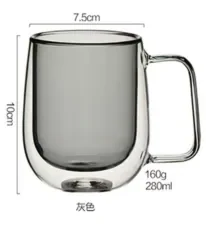
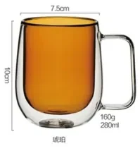
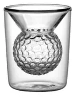
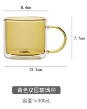
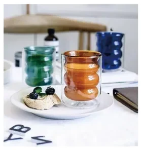
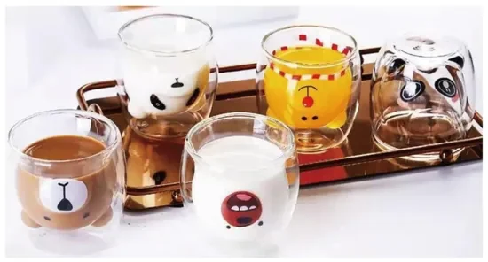
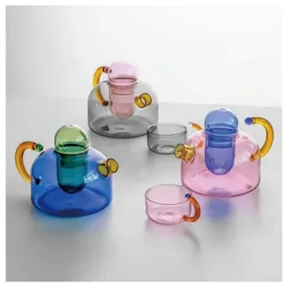
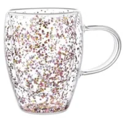
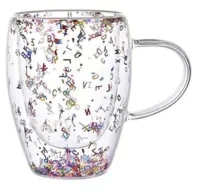
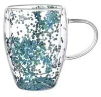
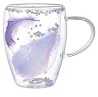
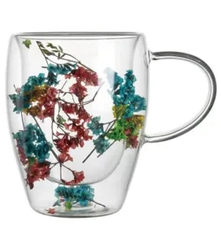
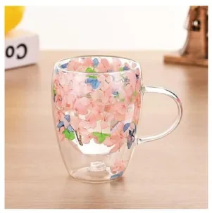
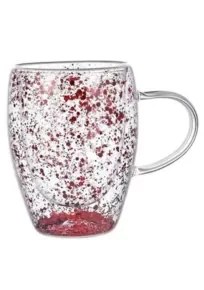
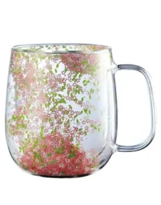
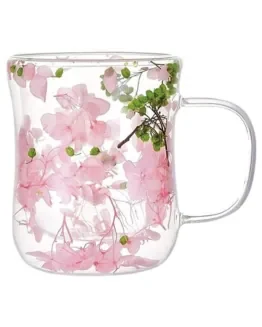
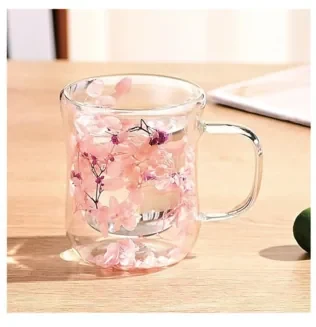
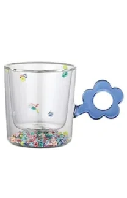
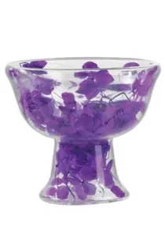
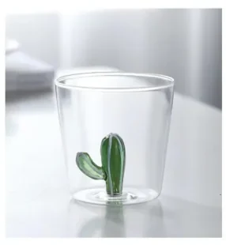
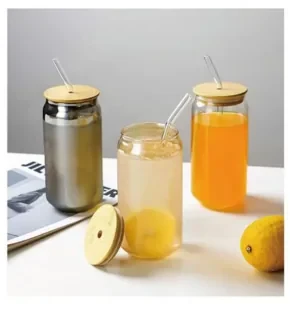
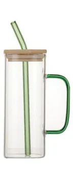
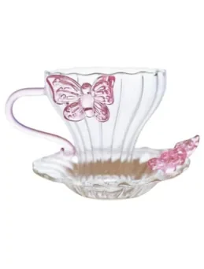
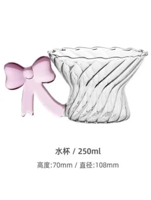
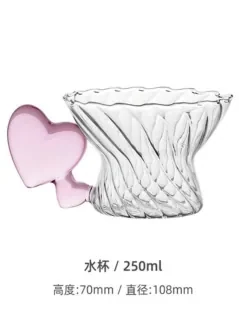
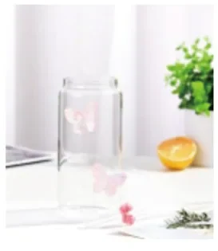
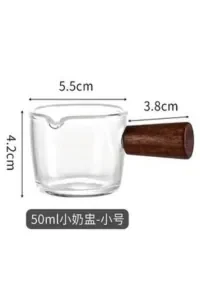
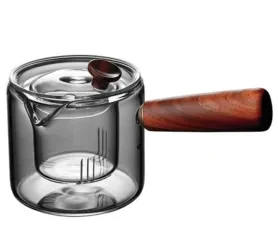
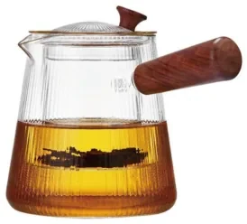
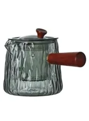
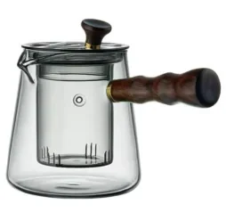
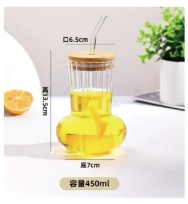
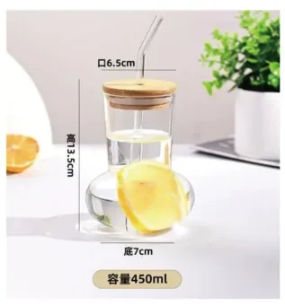
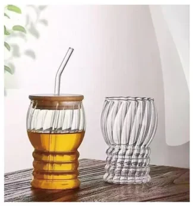
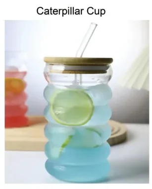
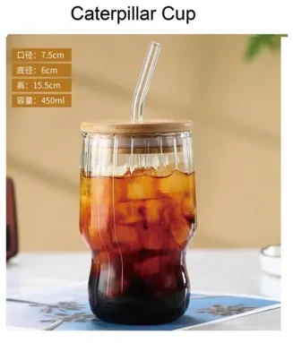
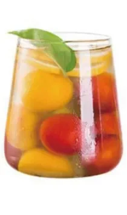
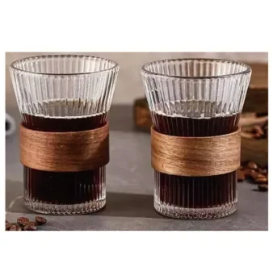
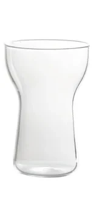
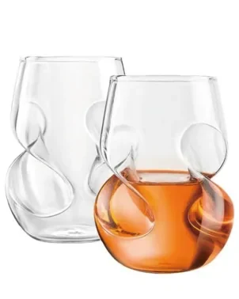
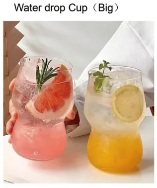
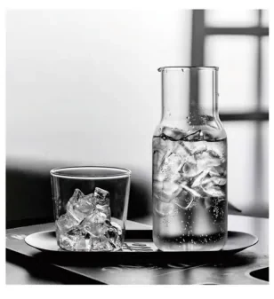
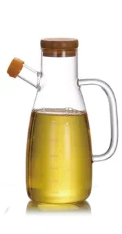
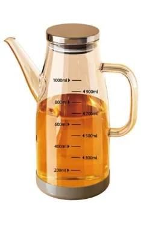
| Material | High-borosilicate glass, heat resistant to 120°C |
| Capacity | 100ml / 250ml / 300ml / 400ml / custom |
| Options | Double-wall, dry-flower filled, silicone lid, straw, wooden handle |
| Decoration | Printing, etching, colour coating, custom gift box |
| MOQ | 500 pcs per design (mixed SKUs per container supported) |
| Sample Time | 7-10 days for existing shapes; 15-20 days for new moulds |
| Production Time | 30-45 days after sample approval |
| Packaging | Individual bubble bag + master carton; drop-tested for glass |
| Certifications | FDA / LFGB food-contact reports available; BSCI audited supply chain |
Yes. Our borosilicate glass is rated for -20°C to 120°C, suitable for hot tea, coffee and iced drinks.
Every piece is individually wrapped, packed with honeycomb board and carton drop-tested. Breakage rate is typically under 1%.
Yes. We can fill with real dried flowers, coloured particles or your own design motif. Lead time for new fill designs is about 15 days for the sample.
MOQ is 500 pcs per design and you can mix several SKUs in one order or container.
Get a detailed quote with sampling cost, unit pricing and shipping options — replied within 24 hours.
Request Glassware Quote Chat on WhatsApp